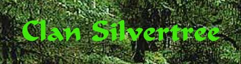
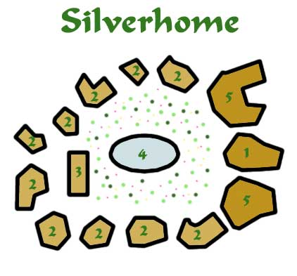
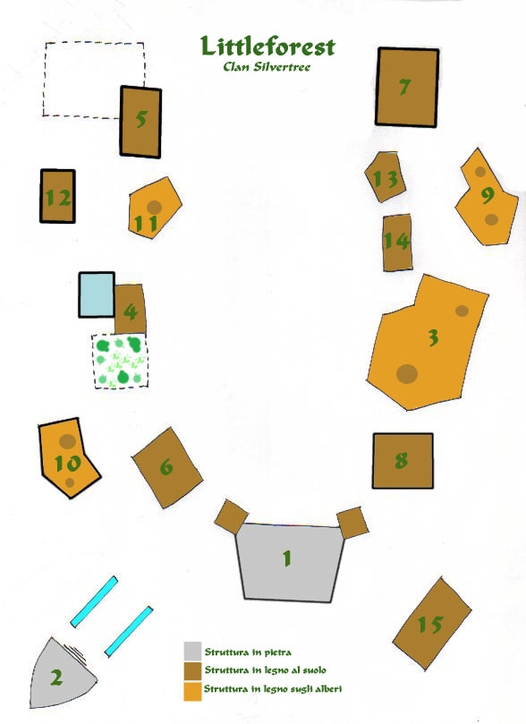

Il clan Silvertree occupa la parte di foresta elfica a nord del fiume Aluin, denominata The Open Forest. Questa zona di foresta è contraddistinta dalla circostanza che gli elfi hanno concesso anche a chi non è della loro razza (o è un mezz-elfo) di entrarci (dopo aver ricevuto, dietro il pagamento di 10 querce, la cosiddetta Foglia del Benvenuto, ossia un amuleto di rame a forma di foglia d'edera che simbolizza l'autorizzazione a recarsi in tale zona di foresta), od addirittura di risiederci (ma può farlo solo chi ha ricevuto il titolo di Amici del Popolo Elfico).
| Elfi del clan totali: | 1800 |
| Elfi alti | 900 (50%) |
| Elfi grigi | 0 |
| Elfi silvani | 300 (17%) |
| Mezz-elfi | 600 (33%) |
| Residenti non elfi: | 290 |
| Umani | 120 (41%) |
| Halfling | 100 (34%) |
| Nani | 30 (10%) |
| Altro | 40 (15%) |
Il nome del clan, il cui simbolo è rappresentato da una sottile foglia d'argento, discende dai giacimenti di argento che gli elfi trovarono sulle sponde nord del fiume Aluin. Giacimenti naturali che diedero la possibilità economica ai coloni di organizzare questo nuovo clan e che sebbene siano ormai esauriti da diversi secoli continuano a dare il nome all'intero clan elfico.
A differenza degli altri clan, quindi, quello Silvertree ha per forza di cose avuto i maggiori scambi, commerciali e culturali, con gli altri popoli confinanti (umani, halfling e nani), si consideri infatti che tale clan ha fra i propri membri (in proporzione al numero totale) il maggior numero di mezz-elfi.
L'aspetto positivo di tale particolare dislocazione geografica è rappresentato dalla ricchezza generata dagli scambi commerciali e dal ruolo strategicamente importante di "porta della foresta elfica" che tale situazione comporta. Si consideri ad esempio che, nonostante l'imponente Rocca di Arodir, sul fiume Aluin, sia stata costruita e sia mantenuta, assieme al suo esercito, con fondi derivanti da tutti i clan Loderin, in sostanza il controllo della roccaforte, e la nomina dei suoi principali ufficiali, spetta al clan Silvertree.
L'aspetto negativo, invece, è rappresentato dall'opinione che gli altri elfi hanno del clan. Gli altri clan Loderin, nonostante siano consapevoli che tale forma di apertura sia necessaria e giovi all'interesse di tutto il popolo elfico, non perdono occasione per sottolineare come il costante contatto con altre razze (in particolare con gli umani) influisca negativamente con tali elfi che hanno sviluppato modi e tendenze rozze e sono giudicati troppo liberali. Gli elfi Erlin, da sempre conservatori nonché contrari all'apertura della parte di foresta, ritengono gli appartenenti a tale clan ormai corrotti e li guardano con sospetto, va osservato a riguardo che in tale zona di foresta non risiede stabilmente alcun elfo grigio.
A differenza degli altri clan Loderin, per i quali la comunità coincide con il principale centro abitato, il clan Silvertree, data l'ingerenza delle altre razze, ha la propria comunità a Silverhome e non a Littleforest. Silverhome è la comunità base del clan, ha una forma circolare ed è interamente costruito sugli alberi (ad eccezione del tempio di Arlinir e delle stalle che si trovano al centro nel Giardino della Rugiada). A Silverhome dimorano gli elfi del clan e gli stranieri non si recano in questa zona senza un motivo specifico, in questo modo gli elfi hanno cercato di preservare la serenità che contraddistingue la loro razza.
L'esercito del Clan
L'esercito del Clan è composto da soldier elfi armati regolarmente come fanteria leggera (spada lunga, arco corto, corazza di cuoio rinforzata, scudo medio) e fungono anche da arcieri. Al fianco di questi soldati vi sono due gruppi di veterani: La fanteria pesante (ranseur (veterani), chain mail, spada corta) e gli arcieri veterani (cuoio borchiata, arco lungo (veterani), spada corta).
Gli ufficiali sono irregolari (usano l'equipaggiamento personale) e sono i guerrieri del Clan che hanno deciso di prestare servizio presso l'esercito (se ci si arruola si deve restare per almeno 10 anni). Chi si arruola deve dedicare almeno 120 giorni all'anno al servizio (può distribuirli come crede a gruppi di 30 giorni minimo). Per ogni mese gli ufficiali vengono pagati dal Clan. Inoltre in casi di bisogno possono essere richiamati alle armi. Tutti i soldati hanno diritto di vitto e alloggio presso la sede di destinazione. I soldati guadagnano 5 querce al mese, i veterani guadagnano 6 querce al mese. I gradi sono i seguenti :
Guardia Scelta (1° - 2° livello), comanda una pattuglia di 6 elfi, quelli di secondo livelli comandano pattuglie veterane. Sono pagati 15 querce al mese al 1° livello e 25 querce al secondo.
Combattente Elfico (3° - 6° livello), comandano un battaglione formato da 5 a 10 pattuglia di elfi. Sono pagati 50 querce al mese al 3° livello, 75 querce al mese al 4° livello, 100 querce al mese al 5° livello, 150 querce al mese al 6° livello.
Comandante Elfico (7° - 8° livello), comandano una postazione rilevante con uno o più battaglioni. Sono pagati 300 querce al mese al 7° livello, 400 querce al mese all'8° livello.
Generale del Clan (9° o + livello), comandano roccaforti o zone di rilevante importanza e fra loro è scelto dal Clan il Comandante Supremo che comanda tutto l'esercito. Sono pagati 700 querce al mese al 9° livello + 200 querce per livello supplementare, il Comandate Supremo ottiene un bonus di 500 querce al mese.
Attualmente vi è un Generale che comanda la Rocca di Arodir con la presenza di 7 battaglioni da 10 pattuglie. Sandiril Silvertree (fighter elfo alto di 9° livello). Mentre il Comandate Supremo che risiede a Silverhome alla guida diretta del battaglione da 10 pattuglie di stanza (di cui 3 arcieri veterani e 3 fanteria pesanti) si chiama Madras Silvertree (fighter elfo alto di 10° livello).
I Fighter multi classe (ad eccezione dei cleric che sono inquadrati nella gerarchia ecclesiastica) sono pagati (si considera solo il livello di guerriero) il 30% in più e sono utilizzati come truppe scelte, incursori ecc... (non comandano pattuglie e battaglioni) ad eccezione dei Fighter/Mage che sono inquadrati come normali guerrieri ed se Bladesinger sono pagati il 50% in più.
Recarsi presso l'esercito è il luogo migliore dove trovare maestri per ottenere training di livello. I costi sono in querce al giorno.
| Livello da ottenere | Costo base (Costo Militari) | Tempo di attesa (Militari) |
| 2 | 6 (4) | 1d4 mesi (1d2 mesi) |
| 3 | 8 (5,5) | 1d6 mesi (1d3 mesi) |
| 4 | 12 (9) | 1d8+1 mesi (1d6 mesi) |
| 5 | 17 (13) | 2d6 mesi (2d3 mesi) |
| 6 | 30 (25) | 2d8 mesi (2d4 mesi) |
| 7 | 45 (35) | 2d12 mesi (2d6 mesi) |
| 8 | 90 (75) | 3d12+3 mesi (2d12+1 mesi) |
Questa somma va all'esercito (uno degli incarichi dei militari può essere quello di addestrare guerrieri).
I militari possono inoltre accedere agli armaioli e ai corazzieri dell'esercito e ricevere uno sconto del 10% su tutte le armi e armature acquistate (possono acquistarsi solo alla Rocca di Arodir) ed ottengono uno scontro del 25% su tutti i costi di riparazione armature (non pagano l'affilatura). Le strutture militari dove è possibile riparare sono la Torre della Guardia di Littleforest, la Rocca di Arodir e Silverhome. In ogni caso si vendono e riparano solo armi e armature non magiche e di materiali comuni.

1) The Silver Palace : Questo edificio costruito su vari livelli, interamente in legno, su alberi secolari è il centro amministrativo del Clan. Si trovano in questo stabile le sale riunioni, la cassa del clan, l'archivio (con i dati sugli elfi e tutti i documenti registrati) e il museo storico del Silvertree, nonché gli uffici di coloro hanno funzioni amministrative. Il palazzo è contraddistinto da intarsi in argento che ricordano le origini del clan. Presso tale palazzo gli elfi del clan possono chiedere denaro in prestito per le loro attività. Gli elfi comuni possono chiedere fino a 1000 querce di prestito, gli elfi di stirpe fino a 2500 querce. Entrambi dovranno versare ogni 12 mesi il 10% del valore ricevuto. Non esiste un termine ultimo per la restituzione della somma ma gli interessi devono essere pagati, se non lo sono il clan disporrà una misura sanzionatoria adeguata o procederà a confiscare i beni personali del debitore. Una volta chiesto un prestito, indipendentemente dal suo ammontare, non se ne potranno chiedere ulteriori senza che il primo debito sia stato interamente estinto, e cmq. saranno dovuti gli interessi del primo anno.
2) Le case elfiche : In questi edifici costruiti sugli alberi (con un altezza inferiore di quelli degli elfi di stirpe) vivono e svolgono la loro attività gli elfi del clan. Se non si considerano le stanze personali ( o delle coppie) le altre stanze di tutti gli edifici sono comuni ed utilizzate collettivamente. In questi edifici vi sono anche le sale adibite a scuola per i giovani elfi e i laboratori degli artigiani (principalmente falegnami, costruttori di archi e tessitori). Tutti i membri del clan hanno diritto ad ottenere una stanza in assegnazione (gratuitamente) e il dovere di arredarla e mantenerla in buono stato. Inoltre tutti gli elfi del clan ricevano gratuitamente vitto a spese delle casse del clan.
3) Le stalle : Unico edificio, assieme al Tempio di Arlinir e alle stalle private degli elfi di stirpe, costruito al suolo queste grosse stalle sono a gratuita disposizione degli elfi per alloggiare la loro cavalcatura. Ogni elfo adulto ha diritto a lasciare in custodia un'unica cavalcatura. Tutti i costi della stalla sono a carico del clan.
4) Il Tempio di Arlinir : Unico edificio in marmo bianco proveniente dai monti Roar, il Tempio di Arlinir è stato costruito al centro del cerchio formato dalle dimore elfiche e in mezzo al Giardino della Rugiada. Si tratta di uno splendido giardino fiorito che ha anche una funzione sacra, quando un elfo del clan muore, infatti, i funerali si svolgono in questo giardino. Il rito si svolge di notte con le piante illuminate da luce soffusa (a volte si usa la magia clericale Moonlight) e al termine di questo il corpo del defunto viene trasformato in fertile humus (con la magia clericale Decompose Corpse). Quest'humus è poi utilizzato per concimare una piccola pianta (per gli elfi di stirpe un piccolo albero) che viene piantata nel giardino. Il tempio che, non essendo chiuso lateralmente, presenta un colonnato interno in tutto la sua circonferenza ha dentro di se una piscina piena di piante (acqua profonda poco meno di un metro) e l'altare della dea in un'isola centrale accessibile mediante un piccolo ponte di legno. Gestice questo tempio il più anziano Alto Sacerdote del clan Silvertree (mentre il secondo gestisce il tempio di Littleforest e il terzo quello della rocca di Arodir. Attualmente è in carica l'Alta Sacerdotessa Elèsuin (7° livello di esperienza). Al tempio vi è inoltre solitamente anche l'Alto Sacerdote Siliun (5° livello di esperienza) che sostituisce e fa le veci della sacerdotessa in sua assenza e hanno offerto i loro servigi altri sei chierici di Arlinr (Melien chierica del 4° livello, Sian e Morianis chierici del 3° livello, Lelisin chierica del 2° livello, Lasion e Eniusin chierici del 1° livello).
5) Le dimore degli elfi di stirpe : Gli elfi di stirpe vivono in queste lussuose residenze, ottenendo una stanza già arredata e un vitto ricco di prelibatezze (sidro e frutta). Questi edifici sono di tre piani (tutti interamente sugli alberi) e più in alto di quello dove vivono gli elfi non di stirpe. Guardie armate del clan controllano che tali residenze non siano violate. Inoltre gli elfi di stirpe possono utilizzare le stalle (teoricamente senza limite di cavalcature) private che si trovano alle basi degli alberi sui quali questi edifici sono costruiti.

1) Torre della Guardia di Littleforest : Il più tipico edificio di Littleforest, raffigurato in molti dipinti, è la gendarmeria principale del villaggio. Su una struttura centrale in pietra chiara di tre piani (alta circa 12 metri si innestano due torrette di legno (con caratteristici rampicanti in legno) di altri due piani (ognuna alta 6 metri) sulle quali sono posizionate le vedette e gli arcieri. In questa torre vi sono le celle per gli arresti temporanei (gli elfi poi sono mandati presso il loro clan di origine, mentre gli appartenenti alle altre razze sono invece trasferiti, in base ad una convenzione per la quale gli elfi pagano periodicamente, presso le prigioni della vicina cittadella umana di Tars). Risiede in questo edificio anche il Capo delle Guardie di Littleforest (attualmente Elundil Silvetree, Elfo Alto di Stirpe, Fighter dell'8° livello). E' la più importante autorità del villaggio si occupa del controllo del territorio. Fra i suoi principali poteri sono da menzionare la facoltà di arresto dei criminali e il potere di ritiro della Foglia del Benvenuto con effetto immediato.
2) Tempio di Arlinir : Secondo tempio per prestigio nella Open Forest dopo quello sito a Silverhome, questo luogo di culto è gestito dall'Alto Sacerdote Shanis Silvertree (6° livello di esperienza) che è coadiuvato da altri quattro chierici (Elisian chierica del 4° livello, Arion chierico di 3° livello, Serin e Jalis chierici di 2° livello).
3) Locanda L'Allegro Silvano : E' la principale locanda di Littleforest. Gli stranieri non residenti e gli elfi in visita dimorano qui. Costruita su grossi alberi secolari questa taverna di legno di 3 piani (con le stanze al secondo e terzo piano) è il principale luogo di ritrovo. Al primo piano vi è un grosso salone che ogni sera si riempie di visitatori e clienti abituali che giocano, ascoltano la musica dei cantori e danzano bevendo sidro e vino. L'oste Alis è un personaggio conosciuto e rispettato (ex. cacciatore e guerriero del 5° livello) degno di stima e dispensatore di buoni consigli ai giovani avventurieri che spesso affollano la taverna. Le suite sono situate al terzo piano e comprendo una stanza da letto un salotto-studio e un bagno arredato in stile elfico.
| Stanza comune, singola notte con pensione completa | 2 tronchi e 2 trolci a persona al giorno |
| Stanza comune, affitto mensile con pensione completa | 5 querce a persona al mese |
| Suite, singola notte con pensione completa | 7 tronchi a persona al giorno |
| Suite, affitto mensile con pensione completa | 16 querce a persona al mese |
| Pranzo completo normale (quello della pensione completa) | 1 tronco a persona |
| Pranzo con specialità (bevande raffinate e cacciagione prelibata) | da 1 a 5 querce a persona |
| Sidro elfico d'annata a volontà | 1 tronco a persona |
| Bevande raffinate (vino nanico, birra halfling e Abrod) a volontà | 1 ulivo a persona |
4) Erboristeria La Foglia Miracolosa: E' una delle principali erboristerie elfiche. Molti stranieri si recano a Littleforest per acquistare i prodotti erboristici prodotti in questo laboratorio.
Vendita di piante e prodotti. Non tutte le piante ritrovate sono lavorate nel laboratorio alcune di queste sono vendute e acquistate da altri giovani erboristi. Ogni mese può verificarsi la presenza delle piante con un tiro percentuale come indicato nel settore dell'Associazione di Erboristi Elfici (link).
5) Venditore di animali: E' un venditore di animali, vende cavalli, cani addestrati e a volte anche creature selvatiche.
6) Filiale Elfica dell' Antica Scuola di Manipolazione Nordoriana (link): E' una sede distaccata della Scuola di Ranassance (Ducato di Southland).